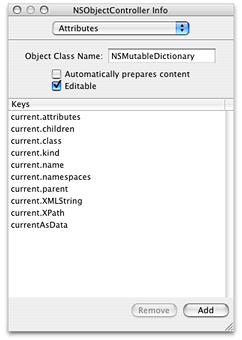

Binding NSXML Objects to a User Interface
Instances of all NSXML classes are model objects that conform to the key-value coding protocol and that notify observers conforming to the key-value observing protocol of any change in their attributes. Consequently, you can establish bindings between NSXML objects and objects on a user interface using the Cocoa bindings technology. With bindings, a change in an attribute value of a NSXML object is propagated automatically to a user-interface property (such as the string value of a text field), and vice versa. Instead of a custom controller containing reams of “glue code” for mediating between the model and view objects of your application, you can, in Interface Builder, bind model attributes to user-interface properties via ready-made controllers.
This article explores how you can effectively establish bindings between NSXML objects and a user interface by looking at the XMLBrowser example project (installed in /Developer/Examples/Foundation). It is not a tutorial on bindings; instead, it is a case study of how you can factor in the hierarchical data model of NSXML when designing the bindings connecting the objects of your application.
Note: For complete information on what bindings are and how to use them, see Cocoa Bindings Programming Topics.
Contents:
The Interface
Connecting Controllers and NSXMLNode Objects
Binding the User Interface
The Interface
To simplify matters, let’s look at just one part of the user interface for the XMLBrowser application. Figure 1 shows the pane made visible when the Editor tab is clicked; it also shows the Elements subpane of that pane.
The current node, whose name is shown just above the largest table view, is the ultimate reference point for everything else on the window. At first, the current node is the NSXMLDocument object representing the entire document. Any children of the current node are displayed in the large table view; initially, this is the root element. When you select a child node in the table view, the text field at the top of the window displays its XPath-notated location in the tree and the text view in the lower-left quadrant of the window displays its XML string representation. If the selected child is an element node with attributes or namespaces, the application displays them in the Attributes and Namespaces table views.
When you click the “>” button while a child node is selected, the selected node becomes the current node and the rest of the window is updated to reflect this. The children of the new current node are displayed in the large table view, with the first child automatically selected. The XPath text field and the XML-string text view change contents accordingly, and any attributes or namespaces of the new child appear in their respective table views. To go back up the hierarchy, thereby resetting the current node to its parent, you click the “<“ button.
Connecting Controllers and NSXMLNode Objects
The object model for the bindings used in the window shown in Figure 1) is fairly simple:
There is an NSXMLNode object designated the “current” node. When the application resets the instance variable holding this object, it uses the NSXMLNode methods
parentandchildAtIndex:to navigate the tree hierarchy (where the index is supplied by the master table view’s current selection).There is a to-many relationship between the current node and its children (accessed via its
childrenproperty).In the array holding the children of the current node, one of the children is selected (the NSArrayController
selectionproperty).There is a to-many relationship between the selected child node and its attributes and namespaces.
The configuration of the NSXML objects and the controller objects in the application reflect this object model. Four off-the-shelf controller objects are added to the nib file of NSXMLBrowser for this window:
A NSObjectController instance for managing bindings with the current node (named “XMLNodeController”)
A NSArrayController instance for managing bindings with the children of the current node (named “XMLNodeArrayController”)
Two NSArrayController instances for managing bindings with, respectively, the attributes and the namespaces of any selected child element (named “XMLAttributesController” and “XMLNamespacesController”)
Figure 2 depicts the connections among these controller instances and the custom application controller, which is named AppController. (The XMLNamespacesController is omitted because its configuration is nearly identical to that of XMLAttributesController.)
Specifically, configuration of the bindings between the controllers and the NSXML model objects consist of the following steps:
Connect the content outlet of the XMLNodeController instance to the application controller (AppController).
Set the keys of the XMLNodeController as shown:
The first part of each key path identifies the
currentattribute of the AppController and the second part identifies an attribute of the current NSXMLNode object.Set the keys of the XMLNodeArrayController to be the attributes of the NSXMLNode class:
Note that the object class in this case is specified as NSXMLNode.
Establish a binding between the
contentArrayproperty of the XMLNodeArrayController and thecurrent.childrenattribute accessed by the XMLNodeController through itsselectionkey.In the Attributes pane for XMLAttributesController, set the
nameandstringValuekeys for the XML attributes.In the Bindings pane for XMLAttributesController, establish a binding between the
contentArrayproperty of the controller and theattributesattribute accessed by the XMLNodeArrayController through itsselectionkey.Repeat the last two steps for the XMLNamespacesController, substituting
namespacesforattributesfor the model key path.
Binding the User Interface
Once you have established the associations between the model NSXMLNode objects and the controllers of the XMLBrowser application, you can establish bindings between objects on the user interface and their controllers, consequently extending the bindings to the associated model objects. To do this, select a user interface object and find the required binding property in the Bindings pane of the Info window. For user-interface objects showing single values, such as text fields and table columns, this property is usually named value or data. For objects showing arrays of data, such as table views, the properties are named (in this case) contentArray and selectionIndexes. For user-interface objects, the binding keys appear in the “Value” category of the bindings while for controllers their data appears in the “Controller Content” category.
Expand the view for the content-related binding property of the user-interface object. Then specify the controller to establish a binding to, the key of the controller to use for the binding, and the key path to the model attribute. For example, the bindings for the XPath field in the Editor pane of XMLBrowser appear as in Figure 3.
Table 1 lists the bindings for most user-interface objects in this part of the XMLBrowser application.
The “content” binding on table views is optional and is created automatically when you bind a table column.
Note: Two of the user-interface bindings in this table use value transformers (objects that transform the value accessed via the binding). The first binding is from the Kind column (children table view); it uses a custom NSValueTransfomer object to convert the integer indicating node kind (a NSXMLNodeKind constant) to a string. The second binding is from the Children column of the same table view; it uses an Apple-provided value transformer (NSIsNotNil) to set the enabled state of items in the column depending upon the existence of child nodes.
© 2004, 2009 Apple Inc. All Rights Reserved. (Last updated: 2009-02-04)